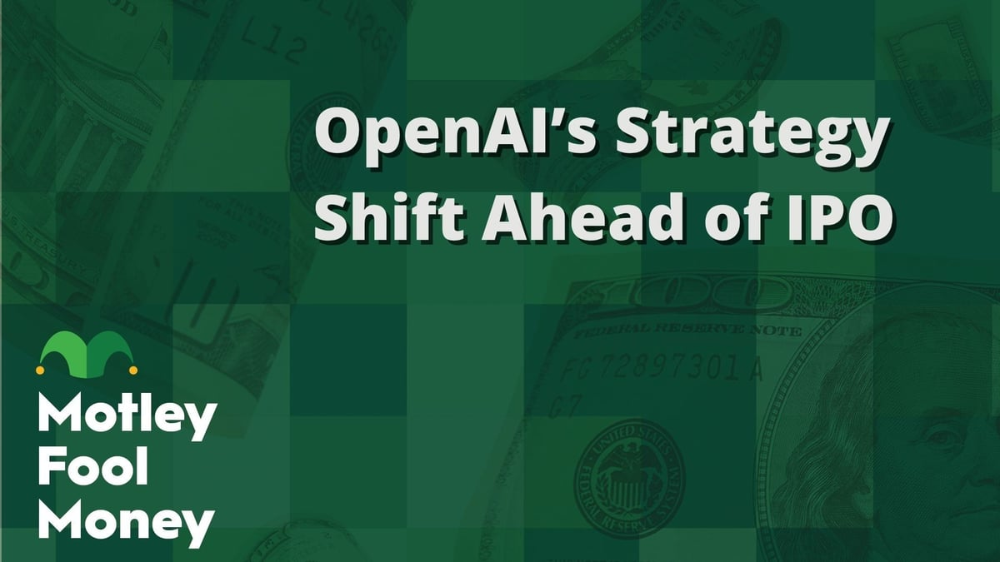

■ 说透 / SHUOTOU · 知览
SUBTITLE
8520亿估值的公司，不敢冒险让投资人皱眉。

3月26号，OpenAI悄悄把成人内容模式关了。
就是自己悄悄关的，去年10月山姆·奥特曼（Sam Altman）亲自提出来的功能，半年不到，说搁置就无限期搁置了，连个公告都懒得发。
然后你往回翻一翻同一周发生的事：Sora关了，每天烧100万美元的AI视频生成器，给用户留了个关门倒计时；即时结账（Instant Checkout）降级了，ChatGPT里面的购物支付功能，从"下一步"变成了"以后再说"。你想啊，三件事在同一周发生，但直到4月3号The Information把它们串在一起报道，大家才反应过来——这不是三次独立的产品调整，这是一次系统性的瘦身。
OpenAI的应用CEO 菲吉·西莫（Fidji Simo）在3月16号的全员会上说了一句话，后来被反复引用："我们不能因为被支线任务分心而错过这个时刻。"
支线任务——一家8520亿估值的AI公司，开始用游戏术语来分类自己做过的东西了。
三件事在同一周砍掉，不是巧合
先说成人内容这件事，因为它的死法最能说明问题。
奥特曼去年10月提出的时候，逻辑其实说得通：ChatGPT有9亿用户，里面成年人占绑定多数，你凭什么替成年人决定他能不能用一个合法的功能？原计划是搞年龄验证，18岁以上的用户可以选择开启，12月上线。
但这个功能从提出的那天起就没顺过。先是推到了今年年初，再推到了3月。1月份的一场内部会议上，OpenAI请来的8位心理健康顾问全票反对——理由是当时的年龄验证系统有12%的失败率，按9亿用户基数算，意味着上千万未成年人可能接触到显性内容。其中一位顾问直接说了一句很重的话：你们可能在开发一个"性感的自杀教练"。
员工那边也在反弹。有人认为开发成人内容跟OpenAI"确保AGI造福全人类"的使命直接冲突，内部讨论的时候气氛不太好看。
但真正踩刹车的，可能不是安全顾问，也不是员工请愿。
是投资人，是那些马上要在路演PPT上签字的人。
有投资人直接问了一句：这个功能的商业上限是多少？跟它可能带来的声誉风险比，值吗？答案很明显——上限不大，下限很深。你想啊，OpenAI正在准备IPO，估值8520亿美元，是人类历史上最大的科技公司上市之一。路演的时候，基金经理问你"你们的AI能生成什么内容"，你怎么回答？
所以成人内容不是被监管杀死的。欧盟的AI法案还在讨论阶段，美国国会连AI版权都没搞定，更别说AI色情了。市场比法律跑得快。投资人的皱眉比监管机构的文件更有效率。
— 01 —
Sora的死法完全不一样。
去年9月上线的时候排场很大，冲上了iPhone App Store榜首，5天内下载量破百万。OpenAI和Disney签了一份三年授权协议，Sora可以用迪士尼、漫威、皮克斯、星球大战里面超过200个角色来生成视频。迪士尼准备投10亿美元。
然后呢？嗯。。半年之后，日活从100万掉到了不到50万，但运营成本没跟着掉。Sora每天烧掉的钱大概是100万美元，而它整个生命周期的应用内购收入，加在一起，210万美元。
你没看错。半年赚的钱不够烧两天半的。
DATA — Sora 的经济账
$100万/天 — 日均推理成本
$210万 — 生命周期总收入（应用内购）
<50万 — 关停前日活用户（峰值100万）
3月24号OpenAI宣布关停Sora，给用户留了到4月26号的时间保存视频，API到9月24号。迪士尼那边的10亿美元投资，因为"没有实际资金交割"，直接作废。迪士尼发了一句很客气的声明："尊重OpenAI退出视频生成业务的决定。"
奥特曼后来在一次采访里说，告诉迪士尼CEO 乔什·达马罗（Josh D'Amaro）这个消息的时候，他觉得"很糟糕"。
但糟糕归糟糕，关还是关了。因为Sora的问题不是产品不好，是算不过来账。一个每天亏100万的功能，在IPO前的财务报表上是个黑洞。投资人看的不是你的视频能生成多酷的特效，是你的成本结构能不能支撑估值。
即时结账的故事又不一样。
这个功能去年9月跟着ChatGPT购物体验一起上线，逻辑是让用户在聊天界面里直接下单买东西——你跟ChatGPT聊你想买什么，它推荐，你加购物车，直接付款，不用跳转。合作商家包括Etsy、Walmart、Shopify。OpenAI当时把它叫做"AI驱动商业的下一步"。
但这个"下一步"走得磕磕绊绊。商家入驻慢，产品数据经常不准确，用户想买两样东西发现购物车只能装一样，会员积分和优惠券接不上。你在ChatGPT里问"帮我找一双跑鞋"，它能聊得头头是道，但等你真要下单的时候，库存是错的，价格是昨天的，地址填写界面卡住了。分析师后来说OpenAI低估了交易场景的复杂度——购物不是信息检索，它底下接着库存系统、物流网络、支付通道、退货流程，每一环都有自己的基础设施和数据标准，不是套一层AI对话就能打通的。
反正亚马逊花了二十年建这套东西，OpenAI觉得自己能用几个月跑通。
3月24号，OpenAI宣布把即时结账从ChatGPT原生功能降级为应用商店里的外部服务，购物环节交回给商家自己的结账页面，ChatGPT只负责帮你找东西。Target、Sephora、Nordstrom这些零售商已经接了新的"产品发现"模式——说白了就是ChatGPT给你推荐，点进去跳到商家自己的网站下单。从"要做亚马逊"退回到"做个导购"。
三件事砍法不一样，但指向同一个地方。
成人内容 ── 投资人踩刹车（声誉风险）
Sora ── 算不过来账（日亏$100万）
即时结账 ── 做不动（交易基础设施太重）
共同点 ── 不产生核心收入，消耗管理层精力
— 02 —
好，到这儿你可能会觉得，OpenAI就是在做正常的业务收缩嘛，砍掉不赚钱的功能，集中资源做主线，哪家公司不这样？
但这次有个不一样的地方。
OpenAI砍掉的不是边缘实验室里面的原型项目。Sora是发布过的、有真实用户的、跟迪士尼签过合同的产品。即时结账是公开宣布过战略方向的功能。成人内容模式是CEO本人亲自站台提出的。这些东西从"公司战略"到"支线任务"，中间只隔了不到半年。
而且你注意西莫用的那个词——side quests。支线任务。
其实吧，一般创业公司不会这么说自己的功能。你做出来一个东西，哪怕不赚钱，你也会说"我们在探索""我们在验证产品市场匹配""这是长期布局"。但OpenAI现在直接管它们叫支线任务了。这个词本身就是一个信号：我们已经从实验室模式切换到了上市公司模式。
我们不能因为被支线任务分心而错过这个时刻。
— 菲吉·西莫，OpenAI应用CEO，2026年3月16日全员会
西莫在同一次会上还说了一句："我们的机会是把那9亿用户变成高算力用户，方法是把ChatGPT变成一个生产力工具。"
生产力工具。就是生产力工具，跟通用AI平台、创意工具、社交入口都没关系。面向企业用户和程序员。这是一个为IPO路演量身定制的定位——因为投资人听得懂"生产力"，看得见"企业客户"，算得出"付费转化率"。
OpenAI现在的月收入是20亿美元。但公司还没盈利，CFO 萨拉·弗赖尔（Sarah Friar）说预计要到2029年才能现金流转正。在这个窗口期里，每一个不产生收入的功能都是负担，每一个可能引发争议的产品都是风险。
那反过来想一下，成人内容、Sora、购物，这些功能真的只是"支线任务"吗？
说实话，也不全是。成人内容模式确实有真实的安全顾虑——年龄验证12%的失败率不是小事，未成年人保护是硬约束。Sora的版权问题在几起诉讼里一直悬而未决。即时结账涉及支付合规，每个市场的规则都不一样。
这些功能被砍掉，安全和合规是真实原因的一部分。但如果只是安全问题，OpenAI会说"我们在改进安全措施，延期上线"——就像它过去处理GPT-4发布节奏时做的那样。而不是直接关掉，然后把它们归类为"支线任务"。
所以实际情况大概是两层叠在一起的：安全问题提供了一个体面的、可以对外说的理由，但真正的驱动力是估值纪律。8520亿美元的估值背后是1220亿美元的融资——来自亚马逊、英伟达、软银，今年2月27号刚关账。这些投资人不是来看你做视频生成器和购物车的，他们投的是"AI时代的生产力平台"这个故事。
任何偏离这个故事的东西，都是噪音。
而且OpenAI现在连管理层都在为IPO做准备。西莫本人4月初因健康原因临时休假，总裁格雷格·布罗克曼（Greg Brockman）接管产品线，CFO 弗赖尔和首席战略官杰森·权（Jason Kwon）协助。一家公司在IPO前夕换将，通常意味着运营纪律已经压过了产品野心。
OpenAI的处境其实有点像2012年的Facebook。上市前砍掉了一堆实验性功能，把所有资源押到移动端广告上，华尔街当时觉得它"终于想明白自己是谁了"。
但区别在于，Facebook砍的那些东西大部分用户根本没听说过。OpenAI砍掉的是Sora——一个上过App Store榜首的产品，一个跟迪士尼绑定的品牌故事，一个CEO说起来会觉得"很糟糕"的决定。这种级别的断舍离，不是产品经理能拍板的，是董事会级别的共识。
监管文件还在路上，投资人的眉头已经皱完了。8520亿的估值面前，比法律更快踩刹车的，是钱。
— 03 —
ZAYEN知览
说透 · SHUOTOU · 知览